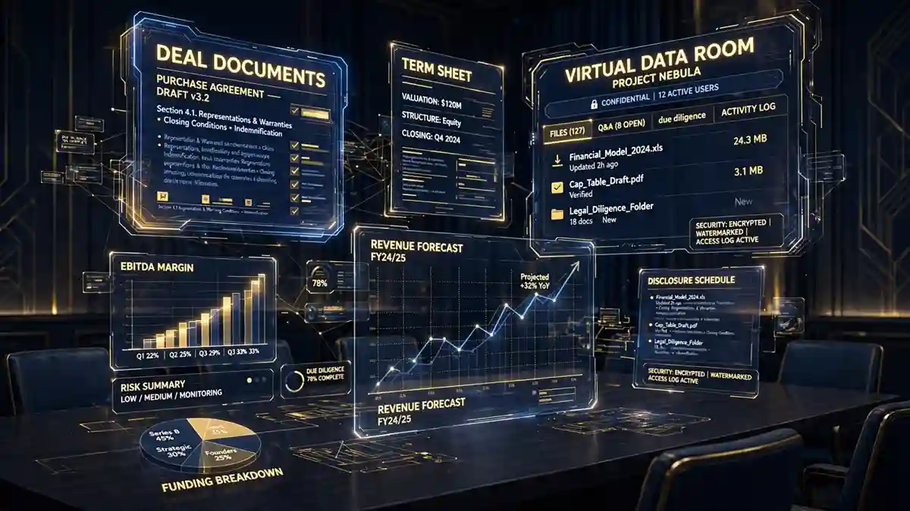
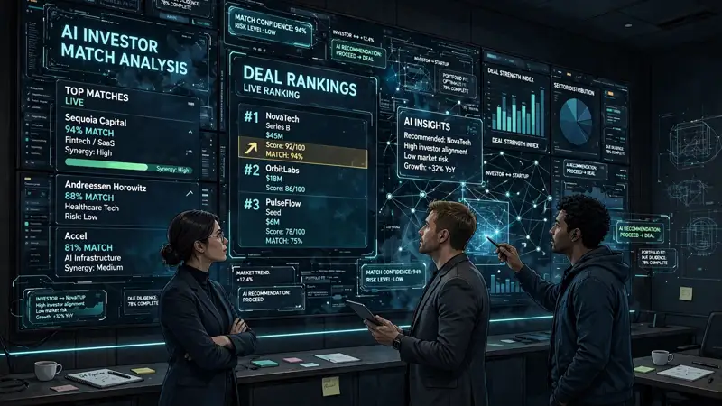

FinBursa launches FinBursa 360: five AI agents and an orchestrator for private markets
- Who: FinBursa, founded 2024; co-founder and CEO Ismail Badereldine, a former BlackRock director with 20+ years in financial markets and investment technology.
- What: launched FinBursa 360 on October 22, 2026 — an AI-native “intelligent front office” for private markets.
- Agents: five specialized agents (relationships; deals, origination to pitch; due diligence and execution; data rooms; fundraising; research) plus one orchestrator coordinating them across the firm’s record.
- Reach: private equity, private credit, real estate, venture capital, M&A and wealth advisory firms worldwide; serves sell side and buy side on one system of record.
- Guardrail: the agents suggest investor/buyer matches and draft outreach — nothing is sent without human approval.
- Deployment: firms go live in days rather than months; workflows and branding configurable; ISO 27001:2022 certified and SOC 2 Type 1 attested.
FinBursa on Thursday, October 22 launched FinBursa 360, an AI-native “intelligent front office” for private markets — five specialized AI agents plus an orchestrator, live today across CRM, deal management, virtual data rooms, fundraising and research. It is aimed at private equity, private credit, real estate, venture capital, M&A and wealth advisory firms worldwide.
The bet is structural, not cosmetic: one system holding a firm’s relationships, deals, documents and counterparties, with AI built into the platform rather than wrapped around five or six disconnected tools.
Five agents, one conductor
The launch introduces five live specialized agents covering relationships, deals from origination to pitch, due diligence and execution, data rooms, fundraising and research — supported by an orchestrator that coordinates them across the firm’s record. Underneath sits investment CRM, deal management from origination to execution, virtual data rooms, fundraising campaign management, investor onboarding, investor reporting, and portals for investors and counterparties — one system of record used by both the sell side and the buy side.

An orchestrator that reads the whole firm
Rather than operating inside isolated applications, the orchestrator draws on connected information across the firm’s front office: emails and meetings, deal histories, data room activity and questions, fundraising and investor activity, documents, notes, and pertinent news. It uses that context to answer questions and provide source-backed insights for deal origination, preparation, due diligence, fundraising and investor relations — and to rank daily priorities for the team.
That is the core of FinBursa’s pitch. “AI is only as useful as the information it can access and the actions it is permitted to take,” the company said in its launch release, arguing that information trapped in disconnected systems is why heavy AI spending so often disappoints.

The human keeps the send button
A firm can ask the agents to identify investors or buyers suited to a deal. Drawing on previous deals, data room activity and CRM history, the agents suggest matches and draft the outreach for the team to review — but nothing is sent without human approval. CEO and co-founder Ismail Badereldine frames it as removing complexity, not people: “By bringing those capabilities into one system, we are enabling firms of all sizes to move faster and compete more effectively without adding complexity.”
A BlackRock veteran’s bet
FinBursa was co-founded by Ismail Badereldine, a former BlackRock director with more than two decades of experience in financial markets and investment technology, including at eFront, alongside investment banking and private markets veterans. The company, founded in 2024, says firms can go live on FinBursa 360 in days rather than months, with workflows and branding configurable to each firm’s own identity.
The platform is ISO 27001:2022 certified and SOC 2 Type 1 attested. FinBursa is a technology provider — not a broker, placement agent or investment adviser.
What it means
The launch lands squarely in the vertical-agents wave: instead of one general assistant bolted onto existing software, specialized agents wired into a single system of record. For private markets — where relationships, documents and data rooms are the business — the test will be whether the orchestrator’s full-record view survives contact with a real firm’s messy data, and whether compliance teams trust the trail it leaves. The human-approval gate suggests FinBursa knows exactly where that trust boundary sits.
Frequently asked questions
What is FinBursa 360?
FinBursa 360 is FinBursa's AI-native “intelligent front office” for private markets, launched October 22, 2026. It combines investment CRM, deal management, virtual data rooms, fundraising, investor onboarding and reporting in one system, with five live specialized AI agents and an orchestrator built in.
What do the five AI agents cover?
Relationships; deals from origination to pitch; due diligence and execution; data rooms; and fundraising and research. The orchestrator coordinates them using the firm's full record — emails, meetings, deal histories, data room activity, documents, notes and news — to answer questions and rank daily priorities.
Does the AI contact investors on its own?
No. The agents can suggest investors or buyers suited to a deal and draft outreach based on previous deals, data room activity and CRM history, but nothing is sent without human approval.